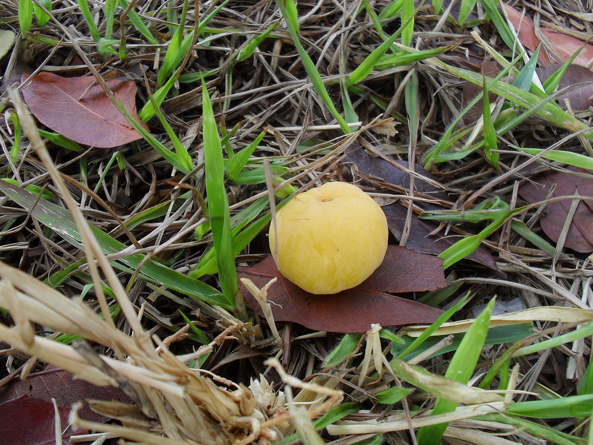
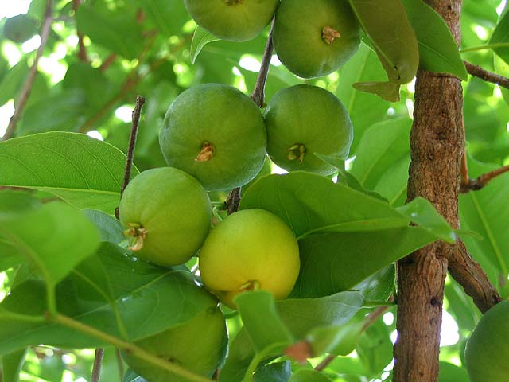
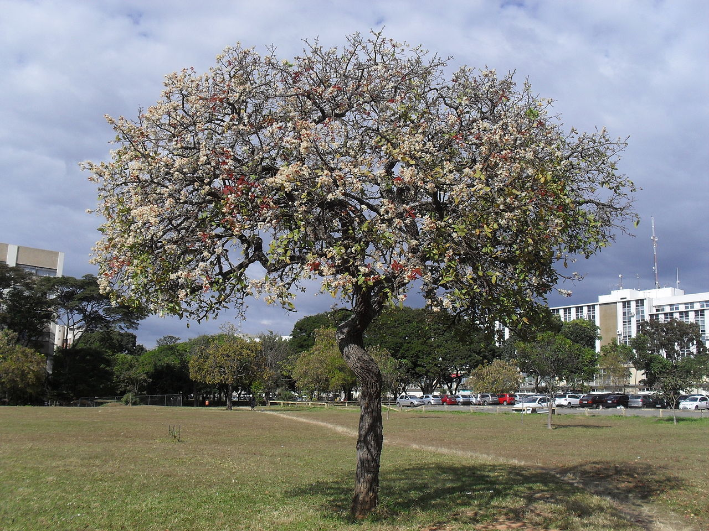

Cagaiteira
Cagaiteira (Eugenia dysenterica (Mart.) DC.; Myrtaceae) é uma árvore. Esta planta do cerrado, encontrada nos estados brasileiros de Goiás, Piauí, Tocantins, Mato Grosso, Mato Grosso do Sul, Bahia,e Minas Gerais, produz um fruto chamado cagaita. Pertence à família Myrtaceae, a mesma da jabuticaba, goiaba, jambo, araçás e eucaliptos. A Cagaiteira floresce entre os meses de agosto e setembro e frutifica nos meses de setembro e outubro. Seu uso pode ser alimentar, medicinal e, por ser muito bonita na época de floração, também é utilizada para arborização.
Características gerais:
É uma árvore de médio a grande porte, apresentando copa densa de formato variado. O tronco é tortuoso, assim como os ramos, e possui uma casca grossa e fissurada. Seu fruto amarelo é utilizado para a produção de sucos, polpas, licores, geléias e sorvetes. A fruta in natura deve ser consumida com cautela por possuir propriedades laxantes. Deve-se evitar o consumo das mesmas quando já caídas do pé, pois podem estar fermentadas, o que aumenta a possibilidade de ocorrer seu efeito laxante. Os frutos são também consumidos por aves. No paisagismo apresenta estonteante beleza ornamental, com todas as suas fases marcantes. Na época de floração, a copa fica completamente florida e praticamente sem folhas. Após esta fase, a copa se colore de cor chocolate, cor de suas novas folhas. E no período de frutificação, um amarelo intenso e vibrante contagia a paisagem.
Os frutos caem do pé, após amadurecerem, em 30 a 40 dias após a florada. Têm bom teor de riboflavina, com 421 mcg; niacina, com 0,13 a 0,137 mg e 72 mg de acido ascórbico; 0,42 mg de vitamina B2. Seu uso, além de ao natural, é para se fazer suco, geleia, doces e licores. Além disso, podem ser usadas sua madeira e casca, esta para curtume, além das folhas, para fins medicinais. Os frutos são muito perecíveis, devendo ser colhidos e colocados em caixas em pequenas camadas e consumidos logo ou colocados em geladeira. A produção ocorre entre outubro e dezembro.
Estudos da Universidade Federal de Goiás (SOUZA et al., 2008) mostram que há pouca diferença entre populações quanto à produção e que o fruto está apto para colher, em média, entre 30 e 40 dias após a florada, no período chuvoso.
Usos

a polpa é consumida ao natural. Apesar do agradável sabor ácido e textura macia, a cagaita deve ser consumida observando alguns cuidados. Isso porque o fruto, se consumido aquecido pelo sol e em grande quantidade, tem um forte efeito laxativo. Já as folhas têm efeito constipador. Além das atribuições medicinais e de produzir um suco muito saboroso, o fruto é utilizado na fabricação de produtos beneficiados, como picolés e sorvetes. Pesquisas acadêmicas apontam que a cagaita é rica em vitamina C e antioxidantes. A polpa, com ou sem a casca, é energética, com baixo teor calórico.
INFORMAÇÕES ADICIONAIS
A cagaita está entre as mais de 50 espécies nativas, fruteiras do bioma cerrado, que são obtidas praticamente através do extrativismo. Estes frutos são levemente ácidos, saborosos e muito apreciados para o consumo ao natural; entretanto, podem causar indisposições intestinais. Tanto o nome popular quanto o científico lembram o poder laxativo de seus frutos; entretanto, o chá das folhas tem efeito contrário, “prendendo” o intestino.
Por isso, precauções devem ser tomadas em relação à quantidade ingerida, evitando-se o consumo de frutos in natura caídos no chão, que ficaram no sol sob a copa da árvore. Uma alternativa viável para o aproveitamento econômico desta espécie é a comercialização da polpa congelada, que pode ser mantida por até um ano sem perder o sabor, ou processada na forma de sorvetes, doces e geleias. Este procedimento assegura maior tempo na conservação do produto, além de agregar valor ao recurso natural e ainda contribuir na melhoria de renda das populações que vivem da biodiversidade do Cerrado.